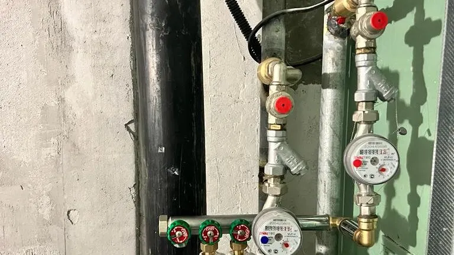
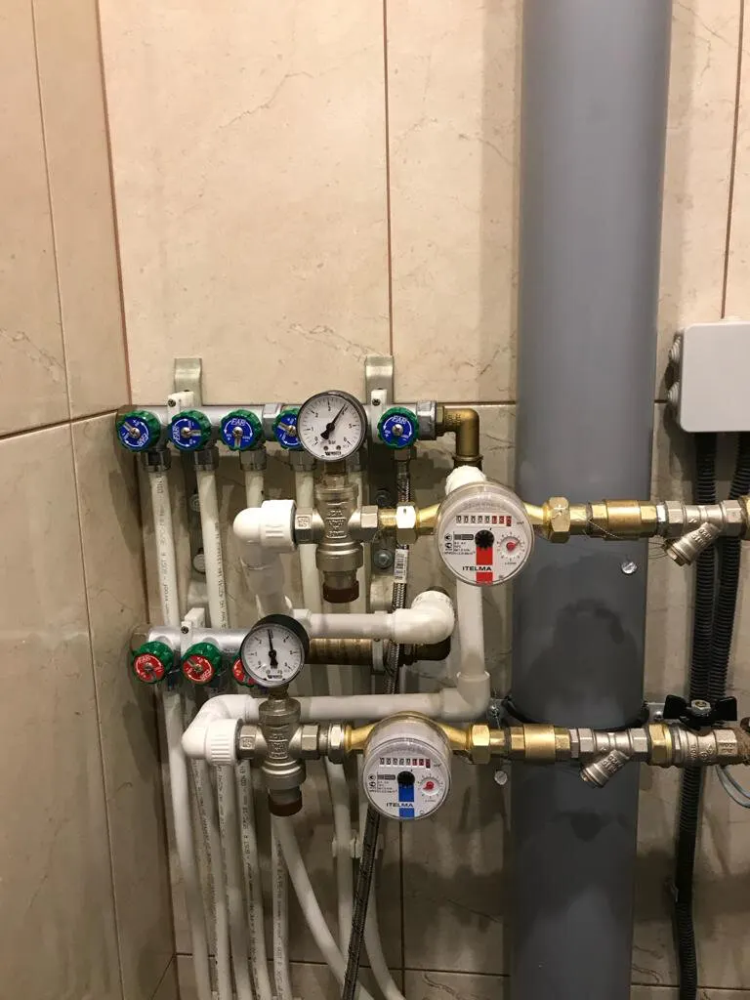
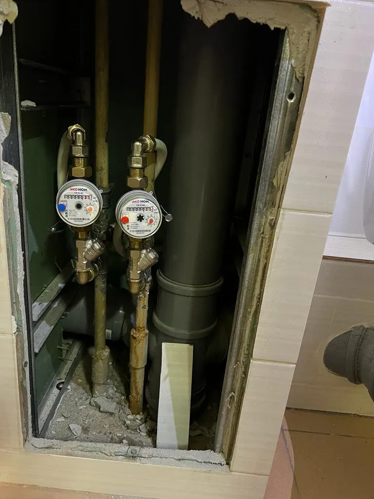
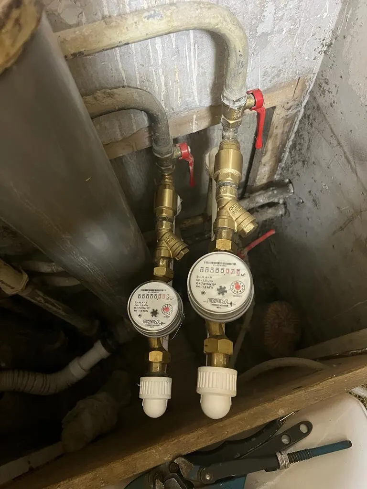

Счётчики воды · сантехника · Москва
Замена и установка счётчиков воды в Москве
Мастер приезжает с инструментом и приборами, ставит счётчики, пломбирует и выдаёт документы для управляющей компании.
- Документы для управляющей компании
- Горячая и холодная вода
- 92 отзыва на Яндекс.Картах

Цены на работы
На карточке в Яндекс.Картах цены не указаны – стоимость называют при заявке по описанию работы.
Счётчики воды
- Замена водосчётчикагорячая или холодная водауточнить
- Установка водосчётчиковпервичная, с пломбировкойуточнить
- Документы для управляющей компаниивыдают после установкиуточнить
Сантехника
- Консультация по выбору счётчикапо телефонууточнить
- Замена кранов и фильтров на подводкепо осмотрууточнить
Стоимость зависит от доступа к трубам и состояния подводки; её называют при заявке.
Как заказать
- 01
Заявка
Звоните: что нужно заменить, сколько счётчиков, адрес и удобное время.
- 02
Время и цена
Согласуете время визита и стоимость работы.
- 03
Приезд
Мастер приезжает в назначенное время с инструментом и приборами.
- 04
Установка
Замена счётчиков, пломбировка, документы для управляющей компании.



Что пишут клиенты
В назначенное время
Отзыв: «приехали в сроках, для меня было важно».
Документы в порядке
Отзыв: «выдал документы для УК, пломбировал приборы».
Объясняют и консультируют
Отзыв: «подсказали, что лучше выбрать».
Аккуратно
Отзыв: «оставил помещение в идеальном порядке».
Отзывы с Яндекс.Карт
«Обратилась в «ЭкоВодянойРасход» быстро ответили мне,сказали цену ,приехал мастер ответил на все мои вопросы и все быстро установил,и за ту же цену которую мне сказали изначально по телефону. Все хорошо!»
Маша Данилова · 27 ноября 2025
«Утром позвонила в эту компанию, узнала стоимость работ, озвучила удобное время для визита специалиста. Через 10 мин перезвонил мастер, договорились о времени. Далее за полчаса перезвонил, подтвердил что выехал. Быстро сделал замену водосчетчиков, заполнил документы. Все четко, аккуратно, как договаривались.»
надежда а. · 14 мая 2025
«Обратился в компанию с решением вопроса замены приборов. Приборы в плачевном состоянии так как жили и не смотрели за ними. Приехали в сроках ,для меня было важно так как не прожываю там. Работа была выполнена в полном объеме,документы в порядке и очень оперативно. Рекомендую.»
владислав песков · 4 августа 2025
Отзывы с карточки на Яндекс.Картах, без правок.
Частые вопросы
Сколько стоит замена счётчиков?
Цены на карточке не указаны. Стоимость называют при заявке – уточните при звонке, что входит в сумму.
Что нужно для документов в управляющую компанию?
По отзывам, мастер после установки пломбирует приборы и выдаёт документы для управляющей компании.
Когда работают?
На карточке указано «открыто до 22:00»; время визита согласуют при заявке.
Как оплатить?
На карточке указаны оплата картой, безналичная оплата и онлайн-оплата.
Позвоните, назовём стоимость и время
- Адрес
- Москва, Поварская улица, 31/29, помещение 1/П, Москва
- Часы
- Открыто до 22:00
- Телефон
- +7 (495) 208-90-91